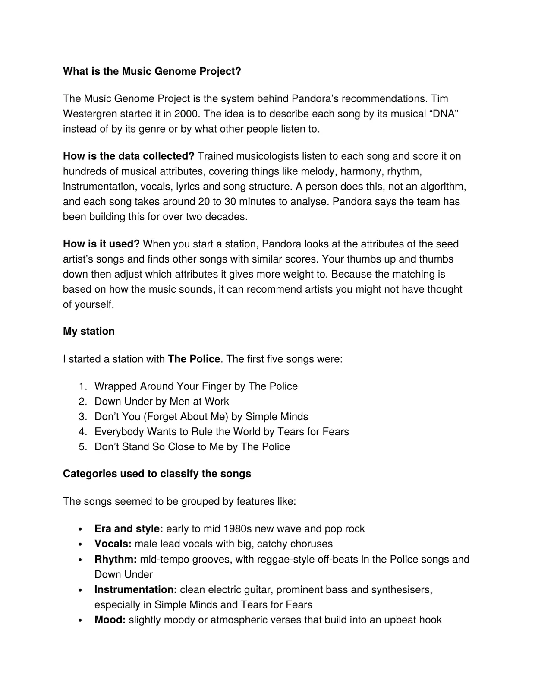
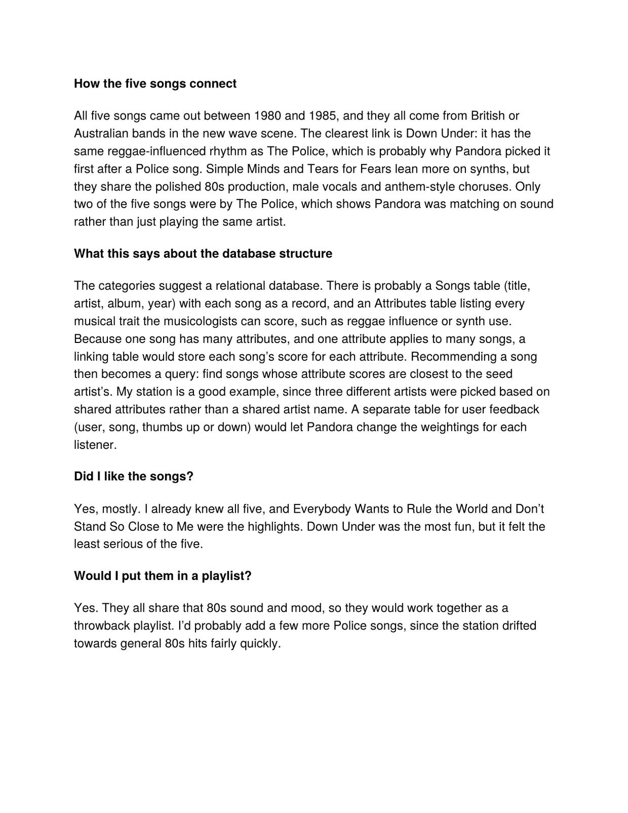

L07 Music Genome Project
The task
Read how Pandora's Music Genome Project collects and uses data, start a station from an artist I like, listen to five songs and work out what the categories say about the database behind them.
What I made
I started a station with The Police. These were the first five songs:
- Wrapped Around Your Finger, The Police
- Down Under, Men at Work
- Don't You (Forget About Me), Simple Minds
- Everybody Wants to Rule the World, Tears for Fears
- Don't Stand So Close to Me, The Police
All five came out between 1980 and 1985, but only two were by The Police, so Pandora was matching on how the songs sound rather than who made them. From that I sketched the likely structure: a Songs table, an Attributes table, and a linking table holding each song's score for each attribute, since one song has many attributes and one attribute applies to many songs.

See the other 1 page


Download the original (PDF, 2 pages, 33 KB)
Reflection
Reflection in progress.